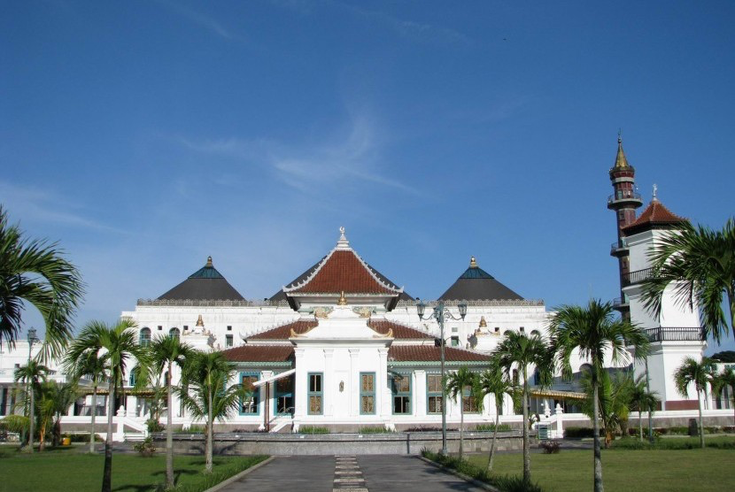

Sejarah

Palembang dikenal sebagai pusat Kerajaan Sriwijaya yang menjadi kerajaan maritim terbesar di Asia Tenggara pada abad ke-7 hingga abad ke-12. Bukti sejarah seperti Prasasti Kedukan Bukit menunjukkan adanya pusat kekuasaan di Palembang sejak tahun 683 Masehi.
Kota ini juga terkenal dengan legenda rakyat mengenai asal-usul nama "Palembang," yang diyakini berasal dari kata "limbang," yang berarti proses penyaringan emas di sungai. Selain itu, Palembang memiliki sejarah kolonial yang panjang sejak dijajah Belanda pada abad ke-17 dan menjadi salah satu kota penting di Sumatera.
Geografis

Kota Palembang terletak di sepanjang Sungai Musi, yang merupakan sungai terpanjang di Sumatera. Kota ini berada pada ketinggian rata-rata sekitar 8 meter di atas permukaan laut, dengan iklim tropis dan curah hujan tinggi sepanjang tahun.
Dengan topografi datar, kota ini memiliki sejumlah kawasan yang rentan te rhadap banjir, terutama pada musim penghujan. Sungai Musi membagi Palembang menjadi dua wilayah utama: Seberang Ulu dan Seberang Ilir, yang dihubungkan oleh Jembatan Ampera yang ikonik.
Wisata
Palembang memiliki berbagai destinasi wisata budaya dan kuliner yang menarik. Kota ini terkenal dengan hidangan khas seperti pempek, tekwan, dan pindang patin yang menjadi daya tarik wisatawan lokal dan internasional.
Jembatan Ampera

Jembatan Ampera adalah ikon Kota Palembang yang dibangun pada tahun 1962. Jembatan ini menghubungkan Seberang Ulu dan Seberang Ilir. Saat malam hari, jembatan ini menyala dengan lampu-lampu indah yang menjadi daya tarik utama wisata malam di kota Palembang.
Masjid Agung Palembang
Masjid Agung Palembang merupakan masjid terbesar di Sumatera Selatan yang dibangun pada abad ke-18. Masjid ini memiliki arsitektur unik dengan perpaduan gaya Eropa dan Tionghoa, menjadikannya salah satu tempat bersejarah di Palembang.